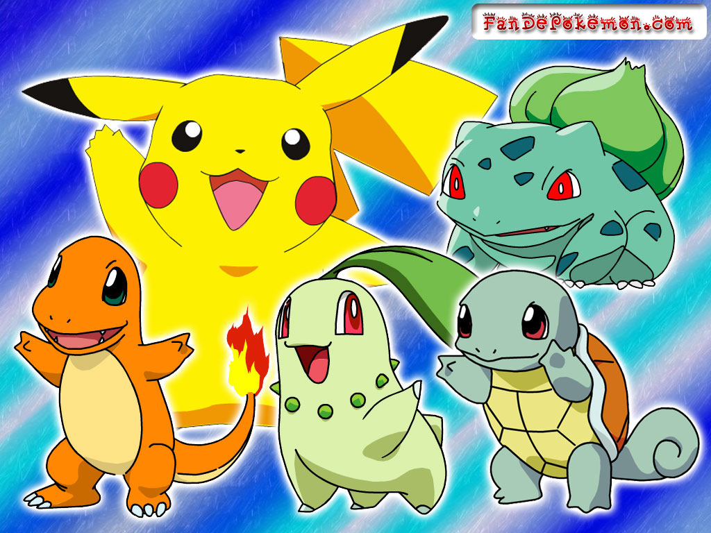
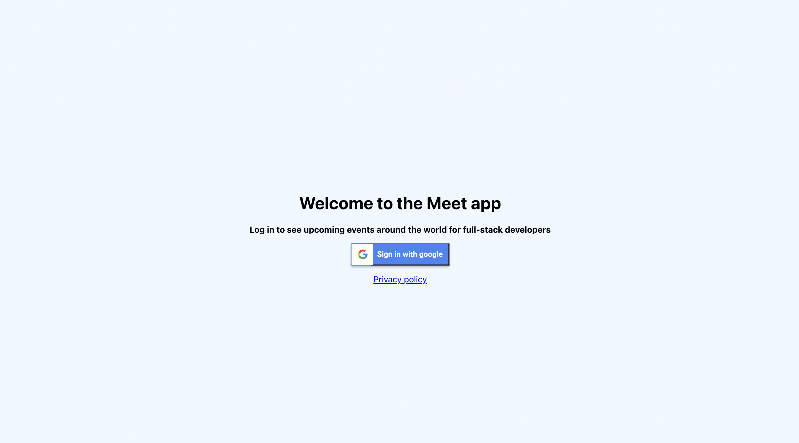

Work
Pokedex
Within this project, I was responsible for the frontend. It’s written in React.js. Additionally, I've created the HTML and CSS templates.
See project on GitHub See project on GitHub PagesMyFlixStudio
Within this project, I was responsible for the frontend. It’s written in React.js. Additionally, I've created the HTML and CSS templates.
See project on GitHubMeet App
The goal of this project is to build a serverless, progressive web application (PWA) with React using a test-driven development (TDD) technique. The application uses the Google Calendar API to fetch upcoming events.
See project on GitHub See project on GitHub Pages